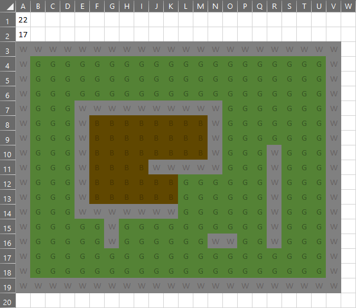

Self Learning
General
Level Manager
The Level Manager is a class I put together to help build grid based levels quickly and easily so they can be implemented rapidly for in game testing. A text document holds the data to be read in by the game. Working with Excel a document, a level is created by entering single characters into cells that represent different tile types that the Level Manager will create. The Excel documents visual layout assists with giving a representation for the level layout early on.
Level Manager : Excel Document

Level Manager : Code
// This includes:
#include "LevelManager.h"
// Local includes:
#include "BackBuffer.h"
#include "Sprite.h"
#include "Tile.h"
#include <string>
// Library includes:
LevelManager::LevelManager()
: mi_levelWidth(0)
, mi_levelHeight(0)
{
}
LevelManager::~LevelManager()
{
// delete tiles
for (unsigned int i = 0; i < tiles.size(); ++i)
{
//tiles[i]->~Tile();
delete tiles[i];
tiles[i] = 0;
}
tiles.clear();
//std::vector<Tile*>().swap(tiles);
}
bool
LevelManager::Initialise()
{
ReadFile();
return (true);
}
void
LevelManager::Process(float deltaTime)
{
for (unsigned int i = 0; i < tiles.size(); ++i)
{
tiles[i]->Process(deltaTime);
}
}
void
LevelManager::Draw(BackBuffer& backBuffer)
{
for (unsigned int i = 0; i < tiles.size(); ++i)
{
tiles[i]->Draw(backBuffer);
}
}
void
LevelManager::ReadFile()
{
mapFile.open("assets\\Level\\maplayout.txt");
}
void
LevelManager::CreateLevel(BackBuffer* mp_backBuffer, b2World* gameWorld)
{
char tileID;
// Find Width and Height specified in file. Convert to int.
std::string strWidth;
std::getline(mapFile, strWidth);
std::string strHeight;
std::getline(mapFile, strHeight);
int mi_levelWidth = atoi(strWidth.c_str());
int mi_levelHeight = atoi(strHeight.c_str());
// Iterate through .txt file and setup tiles.
for (int posH = 0; posH < mi_levelHeight; ++posH)
{
for (int posW = 0; posW < mi_levelWidth; ++posW)
{
Sprite* pTileSprite;
mapFile >> (tileID);
switch (tileID)
{
case GROUND:
//pTileSprite = mp_backBuffer->CreateSprite("assets\\ground.png");
pTileSprite = mp_backBuffer->CreateSprite("assets\\Level\\ground.png");
SetupCollisionTile(pTileSprite, posW, posH, gameWorld, false);
break;
case WALL:
//pTileSprite = mp_backBuffer->CreateSprite("assets\\wall.png");
pTileSprite = mp_backBuffer->CreateSprite("assets\\Level\\wall.png");
SetupCollisionTile(pTileSprite, posW, posH, gameWorld, true);
break;
case BUILDING:
pTileSprite = mp_backBuffer->CreateSprite("assets\\Level\\building.png");
SetupCollisionTile(pTileSprite, posW, posH, gameWorld, true);
break;
default:
// Used to catch cases where the tileID does not match. Will draw placeholder asset.
pTileSprite = mp_backBuffer->CreateSprite("assets\\Level\\placeholder.png");
SetupTile(pTileSprite, posW, posH);
break;
}
}
}
}
// Creates a Tile WITHOUT Box2D properties
void
LevelManager::SetupTile(Sprite* sprite, int posW, int posH)
{
// Get Sprite width / height
int sW = sprite->GetWidth();
int sH = sprite->GetWidth();
Tile* tile = new Tile();
tile->SetPos(b2Vec2((float)posW * sW, (float)posH * sH));
tile->Initialise(sprite); // Height and Width taken as half lengths object width = 2*given width
tiles.push_back(tile);
}
// Creates a tile WITH Box2D properties
void
LevelManager::SetupCollisionTile(Sprite* sprite, int posW, int posH, b2World* gameWorld, bool collision)
{
// Get Sprite width / height
int sW = sprite->GetWidth();
int sH = sprite->GetWidth();
Tile* tile = new Tile();
tile->SetPos(b2Vec2((float)posW * sW, (float)posH * sH));
tile->Initialise(sprite, gameWorld, collision);
tiles.push_back(tile);
}
void
LevelManager::LevelMoveTiles(float x, float y)
{
for (unsigned int i = 0; i < tiles.size(); ++i)
{
if (tiles[i]->GetBox2DBody() != 0)
{
tiles[i]->Move(x, y);
}
else
{
//tiles[i]->SetPositionX(x);
//tiles[i]->SetPositionY(y);
}
}
}
void
LevelManager::LevelStopTiles()
{
for (unsigned int i = 0; i < tiles.size(); ++i)
{
if (tiles[i]->GetBox2DBody() != 0)
{
tiles[i]->GetBox2DBody()->SetLinearVelocity(b2Vec2(0, 0));
}
else
{
}
}
}
std::vector<Tile*>
LevelManager::GetTiles()
{
return tiles;
}
Third Party
Box2D
I picked up Box2D during my game project assignments I took part in while at university. Box2D has very well written documentation with numerous other experienced users available online sharing their troubles and solutions. The only issues I faced when using Box2D where the usual growing pains experienced when getting use to something new. While working with Box2D and SDL. Box2D's positional values had to be adjusted to fit in the scale of the SDL environment. The below example was used to create the Box2D bodies for the level tiles created by the Level Manager. Only walls required full collision information. Whereas the floor tiles only needed a based body to handle positioning.
Box2D : Code
void
Tile::box2DBodyCreate(b2World* gameWorld, bool collision, float mf_spriteWidth, float mf_spriteHeight)
{
b2BodyDef m_entityBodyDef;
m_entityBodyDef.type = b2_kinematicBody;
// Origin is at center. Must be offset by sprite width/height
// Position settings adjusted based on scale differences between SDL and Box2D
m_entityBodyDef.position.Set((mv_pos.x + mf_spriteWidth) * mf_worldScaleB2D, (mv_pos.y + mf_spriteHeight) * mf_worldScaleB2D);
m_entityBodyDef.angle = 0;
m_entityBodyDef.allowSleep = true;
m_entityBodyDef.gravityScale = 0.0f;
mp_body = gameWorld->CreateBody(&m_entityBodyDef);
mp_body->SetUserData(this);
// Create collision shape if object should collide
if (collision)
{
b2PolygonShape boxShape;
// Creates width and height of box (half measures used), given the center, angle
boxShape.SetAsBox(mf_spriteWidth * mf_worldScaleB2D, mf_spriteHeight * mf_worldScaleB2D);
b2FixtureDef boxFixtureDef;
boxFixtureDef.shape = &boxShape;
boxFixtureDef.friction = 100;
boxFixtureDef.filter.categoryBits = 0x0001;
boxFixtureDef.filter.maskBits = 0x0001 | 0x0002 | 0x0003 | 0x0004;
mp_body->CreateFixture(&boxFixtureDef);
}
}
FMOD
An Audio Manager class was created to handle my game sounds while working on my university projects. Once again, the documentation for FMOD was very well written and easy to implement. I found it best to setup FMOD within an Audio Manager class. This gave me greater control over the use of sound effects within my games. I also put together little volume controls and channels to allow me to control the volume of my music VS sound effects at different ratios.
Audio Manager : Code
// Local includes:
#include "AudioManager.h"
// Library includes:
#include <iostream>
AudioManager::AudioManager()
: mp_FMODsystem(0)
, mp_FMODchannel(0)
, mp_FMODchannelMusic(0)
, mp_FMODsound_music(nullptr)
, mp_FMODsound_pShoot(0)
, mp_FMODsound_pReload(0)
, mp_FMODsound_pPickup(0)
, mp_FMODsound_pDeath(0)
, mp_FMODsound_zGroan1(0)
, mp_FMODsound_zGroan2(0)
, mp_FMODsound_zAttack(0)
, mp_FMODsound_zDeath(0)
, volume(0.7f)
, volumeMusic(volume / 3)
, muted(false)
{
}
AudioManager::~AudioManager()
{
mp_FMODsystem->release();
}
bool
AudioManager::Initialise()
{
FMOD_RESULT result;
result = FMOD::System_Create(&mp_FMODsystem); // Create the main system object.
if (result != FMOD_OK)
{
printf("FMOD error! (%d) %s\n", result, FMOD_ErrorString(result));
exit(-1);
}
result = mp_FMODsystem->init(512, FMOD_INIT_NORMAL, 0); // Initialize FMOD.
if (result != FMOD_OK)
{
printf("FMOD error! (%d) %s\n", result, FMOD_ErrorString(result));
exit(-1);
}
// Player Sound Effects
result = mp_FMODsystem->createSound("assets\\soundFX\\SOUNDEFFECT.wav", FMOD_2D, 0, &mp_FMODsound_pShoot);
result = mp_FMODsystem->createSound("assets\\soundFX\\SOUNDEFFECT.wav", FMOD_2D, 0, &mp_FMODsound_pReload);
result = mp_FMODsystem->createSound("assets\\soundFX\\SOUNDEFFECT.wav", FMOD_2D, 0, &mp_FMODsound_pPickup);
result = mp_FMODsystem->createSound("assets\\soundFX\\SOUNDEFFECT.wav", FMOD_2D, 0, &mp_FMODsound_pDeath);
// Zombie Sound Effects
result = mp_FMODsystem->createSound("assets\\soundFX\\SOUNDEFFECT.wav", FMOD_2D, 0, &mp_FMODsound_zGroan1);
result = mp_FMODsystem->createSound("assets\\soundFX\\SOUNDEFFECT.wav", FMOD_2D, 0, &mp_FMODsound_zGroan2);
result = mp_FMODsystem->createSound("assets\\soundFX\\SOUNDEFFECT.wav", FMOD_2D, 0, &mp_FMODsound_zAttack);
result = mp_FMODsystem->createSound("assets\\soundFX\\SOUNDEFFECT.wav", FMOD_2D, 0, &mp_FMODsound_zDeath);
// Music by Eric Matyas www.soundimage.org
result = mp_FMODsystem->createStream("assets\\soundFX\\Monster-Street-Fighters.mp3", FMOD_2D | FMOD_LOOP_NORMAL, 0, &mp_FMODsound_music);
if (result != FMOD_OK)
{
return(false);
}
return(true);
}
void
AudioManager::Update()
{
mp_FMODsystem->update();
}
// Two methods to play the player / zombie sound effects
void
AudioManager::PlaySound(soundEffectsPlayer _SoundEffect)
{
if (!muted)
{
if (_SoundEffect == se_pSHOOT)
{
mp_FMODsystem->playSound(mp_FMODsound_pShoot, 0, 0, &mp_FMODchannel);
}
if (_SoundEffect == se_pRELOAD)
{
mp_FMODsystem->playSound(mp_FMODsound_pReload, 0, 0, &mp_FMODchannel);
}
if (_SoundEffect == se_pPICKUP)
{
mp_FMODsystem->playSound(mp_FMODsound_pPickup, 0, 0, &mp_FMODchannel);
}
if (_SoundEffect == se_pDEATH)
{
mp_FMODsystem->playSound(mp_FMODsound_pDeath, 0, 0, &mp_FMODchannel);
}
}
VolumeControl();
}
void
AudioManager::PlaySound(soundEffectsZombie _SoundEffect)
{
if (!muted)
{
if (_SoundEffect == se_zGROAN1)
{
mp_FMODsystem->playSound(mp_FMODsound_zGroan1, 0, 0, &mp_FMODchannel);
}
if (_SoundEffect == se_zGROAN2)
{
mp_FMODsystem->playSound(mp_FMODsound_zGroan2, 0, 0, &mp_FMODchannel);
}
if (_SoundEffect == se_zATTACK)
{
mp_FMODsystem->playSound(mp_FMODsound_zAttack, 0, 0, &mp_FMODchannel);
}
if (_SoundEffect == se_zDEATH)
{
mp_FMODsystem->playSound(mp_FMODsound_zDeath, 0, 0, &mp_FMODchannel);
}
}
VolumeControl();
}
void
AudioManager::PlayMusic()
{
mp_FMODsystem->playSound(mp_FMODsound_music, 0, 0, &mp_FMODchannelMusic);
mp_FMODchannelMusic->setVolume(volumeMusic);
}
void
AudioManager::VolumeUp()
{
volume += 0.1f;
volumeMusic = volume / 3;
VolumeControl();
}
void
AudioManager::VolumeDown()
{
volume -= 0.1f;
volumeMusic = volume / 3;
VolumeControl();
}
void
AudioManager::VolumeControl()
{
if (volume <= 0.0f)
{
muted = true;
volume = 0.0f;
mp_FMODchannel->setMute(muted);
mp_FMODchannel->setVolume(volume);
mp_FMODchannelMusic->setMute(muted);
mp_FMODchannelMusic->setVolume(volumeMusic);
}
else
{
muted = false;
if (volume > 1.0f)
{
volume = 1.0f;
}
mp_FMODchannel->setMute(muted);
mp_FMODchannel->setVolume(volume);
mp_FMODchannelMusic->setMute(muted);
mp_FMODchannelMusic->setVolume(volumeMusic);
}
}